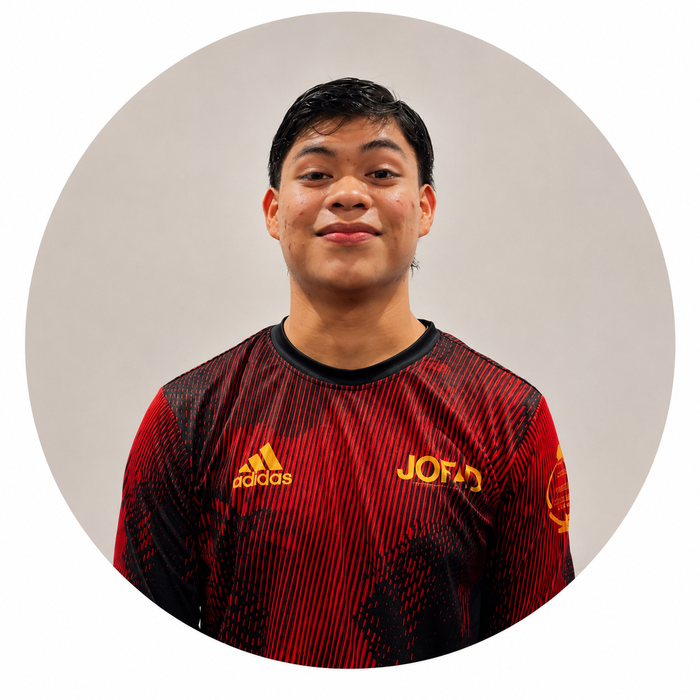

| POS | CLUB | PJ | PG | PE | PP | GF | GC | DG | PTS |
|---|---|---|---|---|---|---|---|---|---|
| 1 | JOFAD FC | 2 | 1 | 0 | 1 | 7 | 3 | +4 | 3 |
| 2 | FURIA ROJA | 1 | 1 | 0 | 0 | 7 | 3 | +4 | 3 |
| 3 | SPARTANS | 1 | 1 | 0 | 0 | 3 | 0 | +3 | 3 |
| 4 | AC MILAGROS | 2 | 1 | 0 | 1 | 4 | 7 | -3 | 3 |
| 5 | GUERREROS DE FE | 1 | 0 | 0 | 1 | 0 | 3 | -3 | 0 |
| 6 | DEP. RESURECCION | 1 | 0 | 0 | 1 | 2 | 7 | -5 | 0 |

#8 Keneth (JOFAD FC)